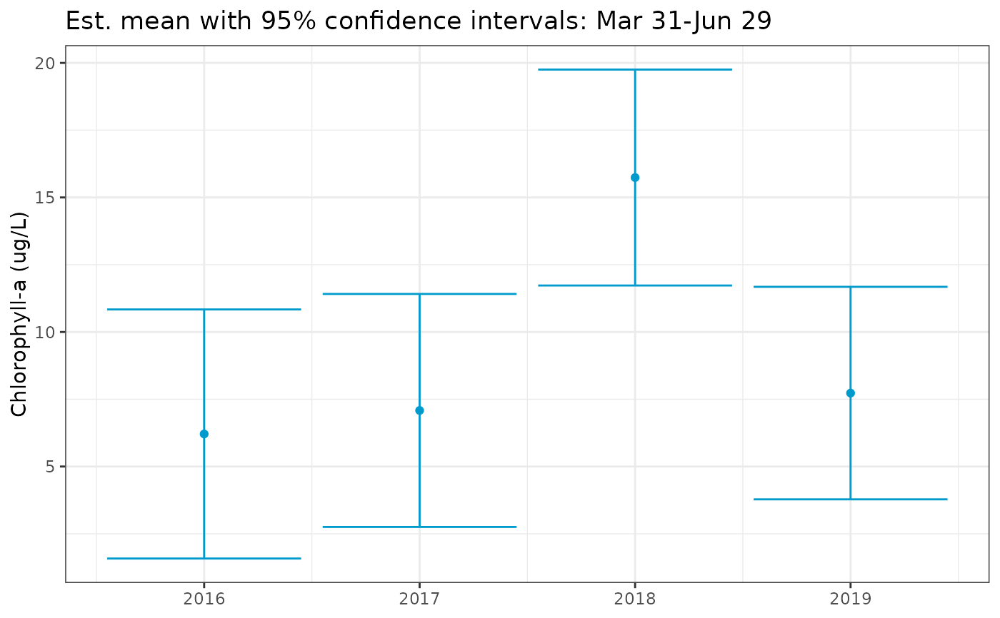
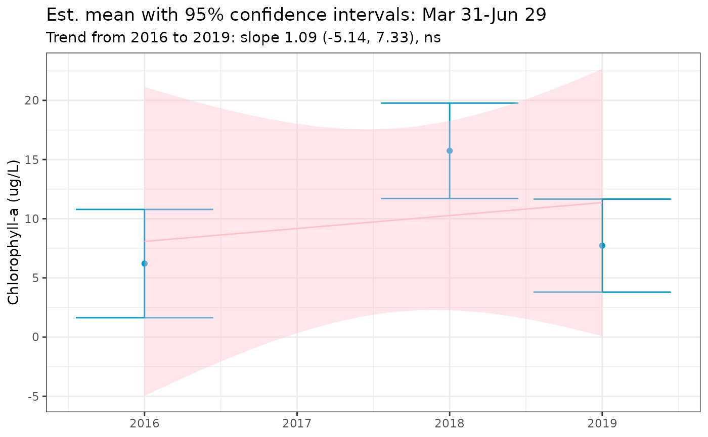

Plot period (seasonal) averages from fitted GAM
Usage
show_metseason(
mod,
metfun = mean,
doystr = 1,
doyend = 364,
yrstr = 2000,
yrend = 2019,
yromit = NULL,
ylab,
width = 0.9,
size = 1.5,
seascol = "deepskyblue3",
trndcol = "pink",
nsim = 10000,
useave = FALSE,
base_size = 11,
xlim = NULL,
ylim = NULL,
...
)Arguments
- mod
input model object as returned by
anlz_gam- metfun
function input for metric to calculate, e.g.,
mean,var,max, etc- doystr
numeric indicating start Julian day for extracting averages
- doyend
numeric indicating ending Julian day for extracting averages
- yrstr
numeric for starting year for trend model, see details
- yrend
numeric for ending year for trend model, see details
- yromit
optional numeric vector for years to omit from the plot, see details
- ylab
chr string for y-axis label
- width
numeric for width of error bars
- size
numeric for point size
- seascol
chr string for color of the seasonal averages
- trndcol
chr sting for color of the trend line
- nsim
numeric indicating number of random draws for simulating uncertainty
- useave
logical indicating if
anlz_avgseasonis used for the seasonal metric calculation, see details- base_size
numeric indicating base font size, passed to
theme_bw- xlim
optional numeric vector of length two for x-axis limits
- ylim
optional numeric vector of length two for y-axis limits
- ...
additional arguments passed to
metfun, e.g.,na.rm = TRUE
Value
A ggplot object
Details
Setting yrstr or yrend to NULL will suppress plotting of the trend line for the meta-analysis regression model.
The optional yromit vector can be used to omit years from the plot and trend assessment. This may be preferred if seasonal estimates for a given year have very wide confidence intervals likely due to limited data, which can skew the trend assessments.
Set useave = T to speed up calculations if metfun = mean. This will use anlz_avgseason to estimate the seasonal summary metrics using a non-stochastic equation.
Examples
library(dplyr)
# data to model
tomod <- rawdat %>%
filter(station %in% 34) %>%
filter(param %in% 'chl') %>%
filter(yr > 2015)
mod <- anlz_gam(tomod, trans = 'ident')
show_metseason(mod, doystr = 90, doyend = 180, yrstr = 2016, yrend = 2019,
ylab = 'Chlorophyll-a (ug/L)')
# \donttest{
# show seasonal metrics without annual trend
show_metseason(mod, doystr = 90, doyend = 180, yrstr = NULL, yrend = NULL,
ylab = 'Chlorophyll-a (ug/L)')

# omit years from the analysis
show_metseason(mod, doystr = 90, doyend = 180, yrstr = 2016, yrend = 2019,
yromit = 2017, ylab = 'Chlorophyll-a (ug/L)')

# }